Означення ймовірності
1. Класичне
означення
Класичне
означення ймовірності має місце, коли простір елементарних наслідків є
скінченим.
Нехай
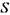
буде скінченим простором з п елементарних наслідків, тобто
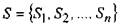
або п - число усіх єдино можливих та рівноможливих наслідків і т - число елементарних наслідків, що сприяють події
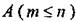
Тоді
за класичним означенням ймовірність події А визначається як
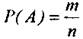
(4)
Класичне
означення ймовірності визначають як ймовірність деякої події до експерименту,
тобто апріорно.
Наприклад,
при киданні монети можуть бути два можливих наслідки:
герб або напис, тобто п = 2 та тільки один наслідок, якщо
випаде герб, тобто т= 1. Тоді
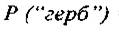
=1\2
Аналогічно,
ймовірність появи "З" при киданні шестигранного кубика дорівнює
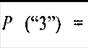
1\6 , тому що існує тільки один елементарний наслідок,
що сприяє появі
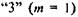
і шість рівно можливих наслідків

2. Статистичне
означення
Звернемося до експерименту з киданням монети. В
таблиці 1 представлені одержані результати.
Таблиця 1
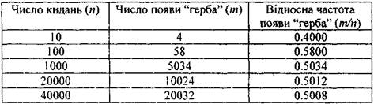
Помічаємо, що відносна
частота (колонка 3) значно відрізняється
від 0.5, коли число спроб невелике, і наближається до 0.5, коли число
спроб зростає. Цей результат підтверджує, що ймовірність появи
"герба" як і раніше дорівнює 1\2
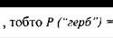
1\2
Вважаємо, що експеримент
може бути повтореним при незалежних і подібних умовах.
Нехай
при п спробах, подія А з'явилась т раз. Відношення
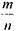
називають відносною частотою події А після п повторень.
Якщо число спроб п зростає
і зростає, то відносна частота прямує до величини Р(А), і тоді Р(А) називають
емпіричною ймовірністю події А, тобто
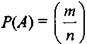
(5)
Приклад 2. Кидається пара
гральних кубиків.
1)
Обчислити ймовірність того, що на обох
кубиках з'явиться те саме число.
2)
Обчислити ймовірність того, що сума
чисел, які випали на двох кубиках, дорівнює 6.
Розв’язання . При киданні двох
гральних кубиків простір елементарних наслідків £ експерименту становить
36 наслідків, тобто:
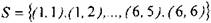
Гральні кубики однакові, тому кожен з 36 наслідків - рівно можливий, тобто
ймовірність кожної елементарної
події дорівнює 1/36. Зауважимо, що елементарною 36 вважають подію, яка має тільки один наслідок.
1) Нехай
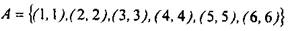
подія, яка полягає в тому, що на обох
кубиках з'явиться те саме число.
Тоді ймовірність події А дорівнює:
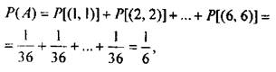
3)
Нехай
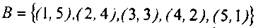
- подія, яка полягає в тому, що сума
чисел, які випали на двох кубиках, дорівнює
6.
Тоді ймовірність цієї події дорівнює: